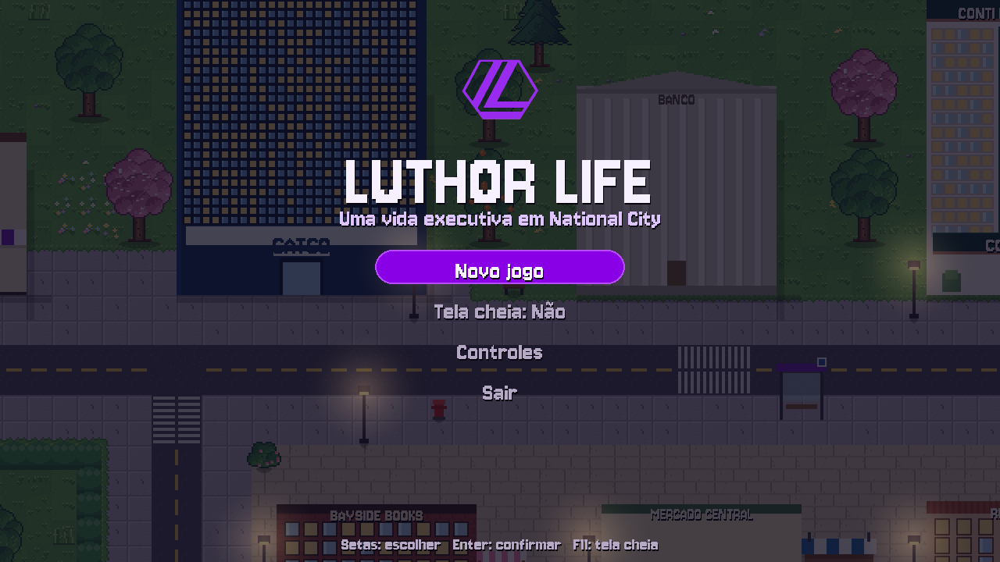
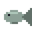
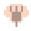
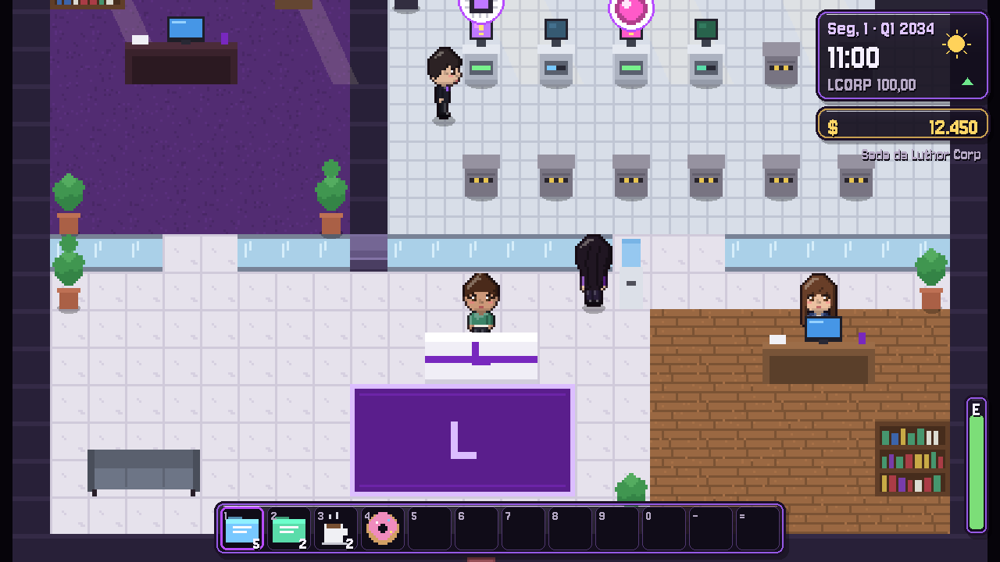
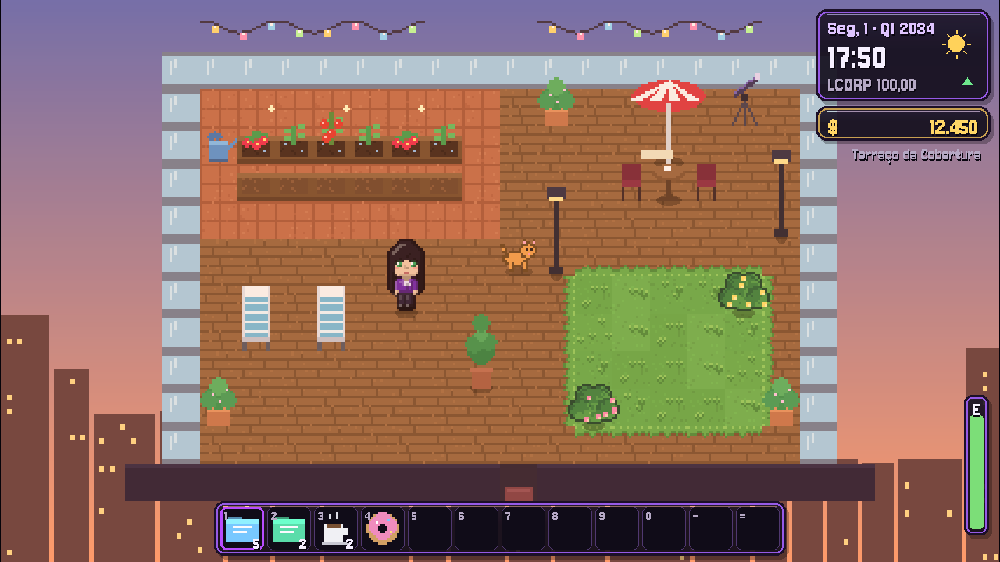
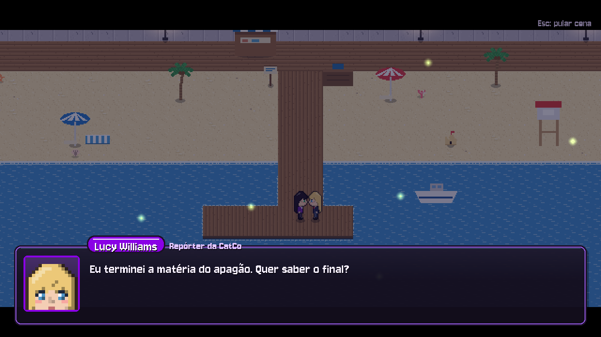
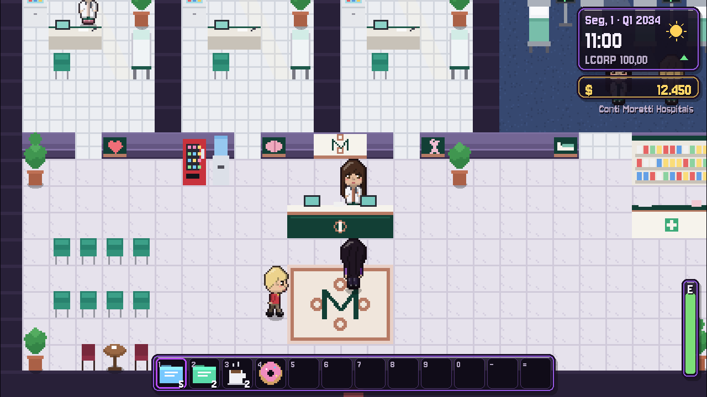

Manhã
- Café no Grão Nobre e e-mails da CEO
- Trabalhar nos projetos do laboratório
- Regar a horta e catar conchas na praia
Uma vida executiva em National City
Você é Letícia Luthor, a CEO da Luthor Corp. Lance projetos no laboratório, pesque no píer, cultive a horta do terraço, adote um bichinho e encontre o amor numa cidade que vive com você, da manhã até tarde da noite.

// o jogo
Luthor Life é inspirado em Stardew Valley e Coral Island, mas trocando a fazenda por uma empresa de tecnologia. Cada dia tem manhã, tarde e noite. A cidade muda de rotina, as pessoas mudam de lugar e você decide como gastar a sua energia.
// o que fazer
Trabalhar dá dinheiro, mas a vida em National City tem muito mais. Cada atividade tem o seu próprio minigame, coleção ou recompensa.
Compre propostas, inicie projetos nas bancadas e trabalhe neles todo dia. Lance produtos e feche contratos à noite.

13 espécies no mar e nos lagos, que mudam com o trimestre, a hora e a chuva. Tem um peixe lendário brilhando verde…
Plante manjericão, tomate, morango, girassol, rosas e abóbora. Regue todo dia, colha e cozinhe.
Adote um gato ou um cachorro no Abrigo Patinhas. Faça carinho, dê petiscos e receba presentinhos.
Ingredientes do Mercado Central viram pratos no fogão da cobertura. Livros ensinam receitas secretas.

Conchas, corais e estrelas-do-mar na praia; flores, amoras e trevos de 4 folhas no parque, no bosque e no jardim. Todo dia tem mais.
National City quase dobrou: Bosque Bayside com lago e trilha, Jardim do Mirante com gazebo e um farol na ponta da praia.
À noite a jukebox do Noonan's vira palco. Acerte as setas no ritmo e ganhe gorjetas da plateia.
Seis filmes que se revezam, cada um com a sua cena. Leve alguém especial e divida a pipoca.
12 especialidades no hospital da cidade. Cada consulta renova a energia e dá um bônus diferente no dia.
Compre e venda ações da sua empresa. Vender bem faz a cotação subir; escolha a hora certa de lucrar.
Lucy ou Vittoria? Rosas aos 8 corações para namorar, pingente aos 10 para morarem juntas.
Cenas especiais nos eventos de coração, com câmera, emoções e momentos que você pode rever no menu.

// a empresa
O laboratório é a sua fazenda. Projetos são as sementes, e o trabalho diário faz eles crescerem.

// a cobertura
A porta de vidro da sala leva ao terraço: canteiros, espreguiçadeiras, telescópio e a cidade inteira lá embaixo.

// relacionamentos
Converse todos os dias, descubra o presente favorito de cada pessoa e acompanhe histórias que se desenrolam aos poucos.

// a cidade
Moradores chegam pela rua, entram nos lugares, ficam um tempo e vão embora. Ninguém repete o mesmo lugar em sequência.
// quem você vai conhecer
Cada personagem tem rotina própria, gostos, falas, eventos de coração e a sua própria roupa. Todas aceitam conversa e presentes.
// capturas de tela
Tudo desenhado por código, pixel por pixel. Clique numa imagem para ampliar.
// instalação
O jogo roda em Windows, Linux e macOS. Você só precisa do Python.
Baixe em python.org (3.10 ou mais novo). No Windows, marque “Add Python to PATH” na instalação.
python.orgBaixe o .zip e extraia, ou clone o repositório:
git clone https://github.com/LuthorW/Luthor-Life.gitNo Windows, dê dois cliques em Jogar.bat: ele instala o que falta e abre o jogo. Ou, no terminal:
pip install -r requirements.txtpython main.pyDica: o jogo salva sozinho toda noite, quando você dorme. O progresso fica em saves/save.json.
Aperte F11 para jogar em tela cheia.
// teclado e mouse
// para começar bem
Compre Relatórios de Mercado no Terminal P&D (são baratos e ficam prontos em 2 dias) e trabalhe nas bancadas todo dia. Enquanto isso, pesque: o Seu Joca dá uma vara de pesca na primeira conversa no píer.
Venda produtos do laboratório: a cada $800 em produtos numa noite, a ação sobe cerca de $1. A amizade com a Nia e uma doação ao Conti Moretti também ajudam. Compre na baixa e venda depois de um lote grande.
Converse e dê presentes para a Lucy ou a Vittoria até 8 corações, depois entregue um Buquê de Rosas Vermelhas (Mercado Central). Aos 10 corações, o Pingente de Compromisso convida ela para morar com você.
Cada personagem conversa uma vez por período: manhã, tarde e noite. Presentes, lojas e convites continuam liberados.
Às 2h você desmaia de cansaço e acorda num leito do Conti Moretti, com uma conta para pagar. Durma antes!
// por dentro
Toda a arte é gerada por código com pygame-ce: tiles, prédios, personagens, ícones e efeitos. O projeto é organizado em módulos simples de entender e de modificar.
Luthor-Life/
├── main.py # inicia o jogo
├── Jogar.bat # atalho para Windows
├── assets/ # fonte, logos e retratos
└── luthor/
├── game.py # núcleo do jogo
├── world.py # mapas de National City
├── art.py # pixel art procedural
├── scenery.py # árvores, grama e cenário
├── sprites.py # personagens e roupas
├── characters.py # personagens e rotinas
├── dialogue.py # falas por período
├── activities.py # horta, pet, karaokê, cinema
├── hospital.py # Conti Moretti
├── doctors.py # as médicas
├── crowd.py # moradores da cidade
├── cutscenes.py # motor de cenas
├── minigames.py # pesca, fliperama, fogão
└── data.py # itens, peixes, receitas